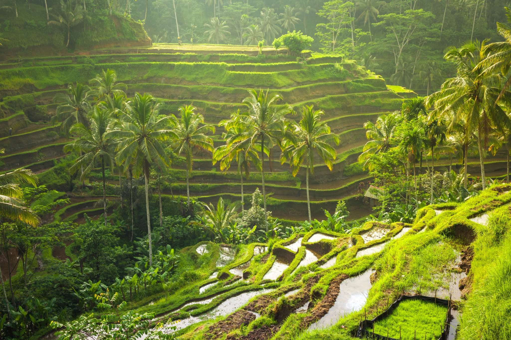
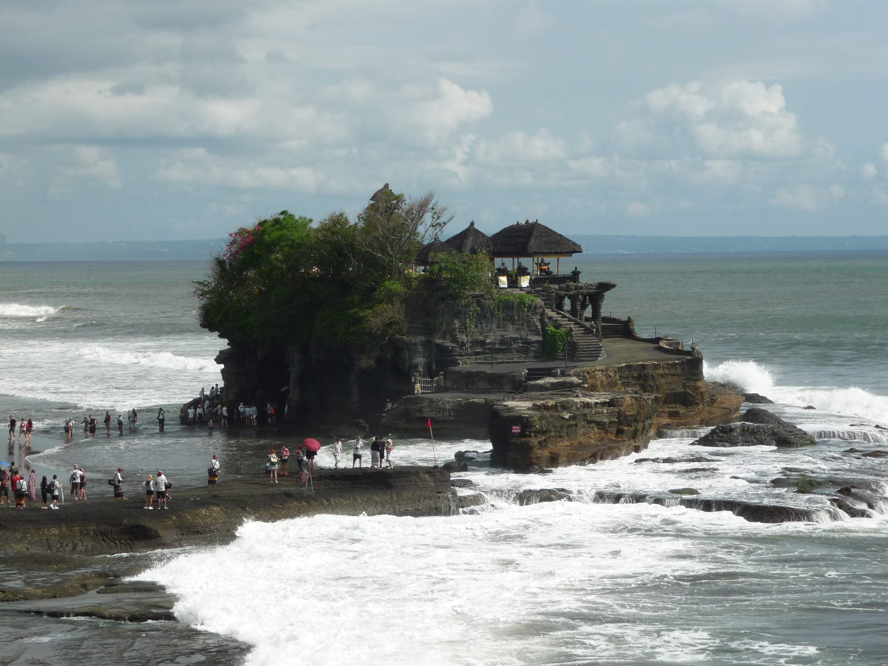
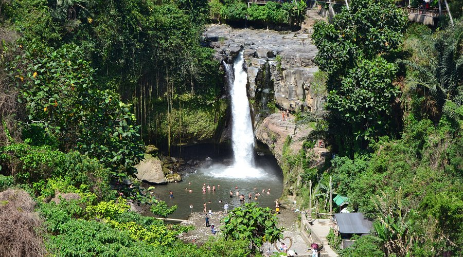

Тропический Бали



Бали - это остров богов, где каждый день начинается с ароматных подношений и звуков традиционной музыки. Убуд, культурное сердце острова, встретил меня изумрудными рисовыми террасами и древними храмами.
Рисовые террасы Тегаллаланг - это живое произведение искусства. Ярко-зеленые ступени, созданные руками балийских фермеров, спускаются по склонам холмов, создавая невероятный пейзаж.
Храм Танах Лот, стоящий на скале посреди океана, особенно прекрасен на закате. Волны разбиваются о камни, а солнце окрашивает небо в огненные цвета.
Балийская кухня, йога на рассвете, серфинг на океанских волнах и невероятное гостеприимство местных жителей сделали это путешествие незабываемым.
Рекомендации для посещения
- Рисовые террасы Тегаллаланг - приходите рано утром, когда меньше туристов и красивый свет.
- Храм Танах Лот - лучшее время для посещения - закат, но будьте готовы к толпам.
- Убуд - культурный центр: посетите Лес обезьян, художественные галереи и рынок.
- Водопад Тегенунган - освежающее купание в джунглях, возьмите купальник!
- Пляж Семиньяк - для серфинга и пляжных клубов с закатами.
- Гора Батур - треккинг на рассвете к вулкану, незабываемые виды!